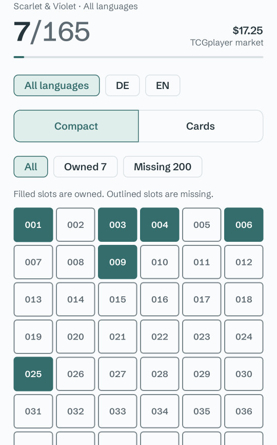
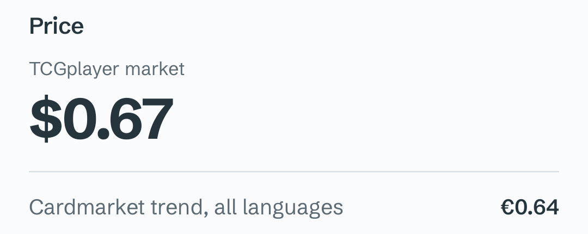

Android-Tester gesucht
Pokémon-Karten offline scannen, sammeln und Preise sehen. Kostenlos, ohne Werbung.


- Code scannen und der Google-Gruppe beitreten
- „Tester werden“ tippen
- Foilark aus dem Play Store installieren
Mit demselben Google-Konto wie im Play Store. Bitte 14 Tage dabeibleiben.
Android 8 oder neuer, App auf Englisch.